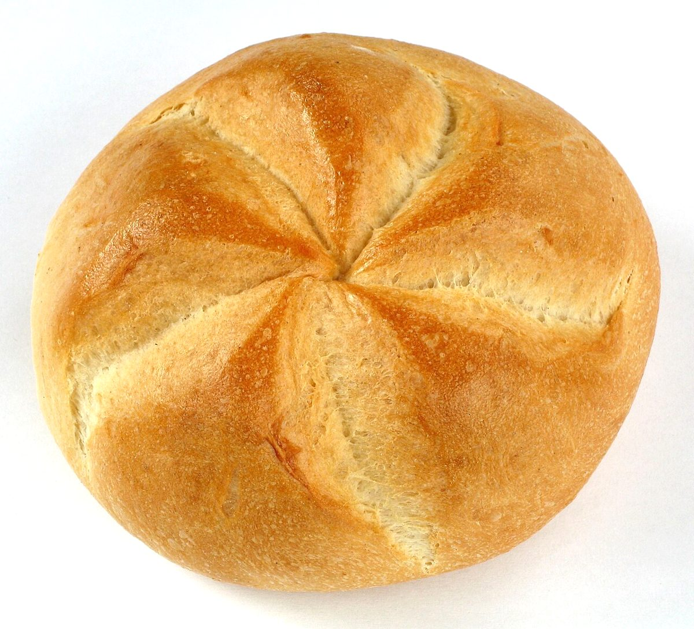

2
店のこと
お店について確認できているのは、所在地・電話番号・Instagramのアカウントだけです。
このページの「部位の読み方」は、制作側が連想して書いたものです。お店の実際の様子・考え・メニューとは関係がありません。
確認できていること
- 店名は「ヤソウカフェyamacha」、業種はカフェ
- 所在地は沖縄県沖縄市久保田1丁目21-12(〒904-0023)
- 電話番号は準備中
- 営業時間・定休日・メニュー・価格・ご予約・駐車場は準備中

部位の読み方
教卓を六つに分ける
| 1 | 天板 | いちばん上の一枚板。資料やノートをのせる面。 |
|---|---|---|
| 2 | 幕板 | 天板の下に渡る帯状の板。脚まわりをつなぐ。 |
| 3 | 引き出し | 中央に収まる浅い箱。チョークや出席簿のしまい場所。 |
| 4 | 前板 | 正面をふさぐ板。左右の袖に一枚ずつ。 |
| 5 | 棚板 | 引き出しの下に渡る、一段の仕切り。 |
| 6 | 脚 | 床に立つ柱。この略図では正面の二本が見える。 |
制作側の連想で、お店の理念・由来とは無関係です。
ギャラリー(イメージ)
断面と粒のイメージ